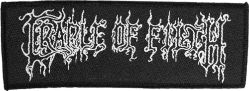
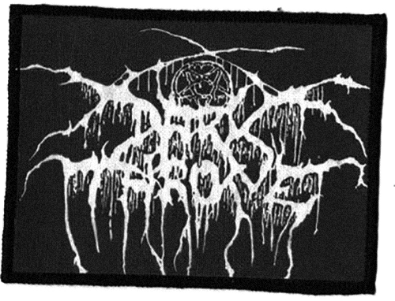
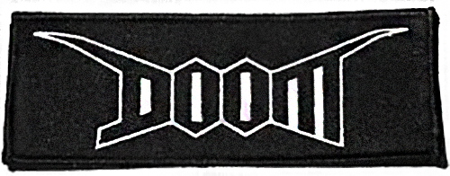

Contexte
Ce projet est à l’origine une commande que m’a faite la marque Wastedparis.
À partir de références iconotypographiques, je devais, à l’instar des groupes de metal, concevoir des logos. Les dessins rendent hommage aux logos des groupes comme Darkthrone, Doom ou encore Cradle Of Filth.
Deux designs ont été retenus et sont aujourd’hui utilisés dans les collections SS20 Genesis, AW19-20 Collapse & SS19 Heatwave. Passionné par les logotypes de groupes, j’ai pu grâce à ce projet mettre à profit mes inspirations et mon engouement pour cette pratique de dessin.


